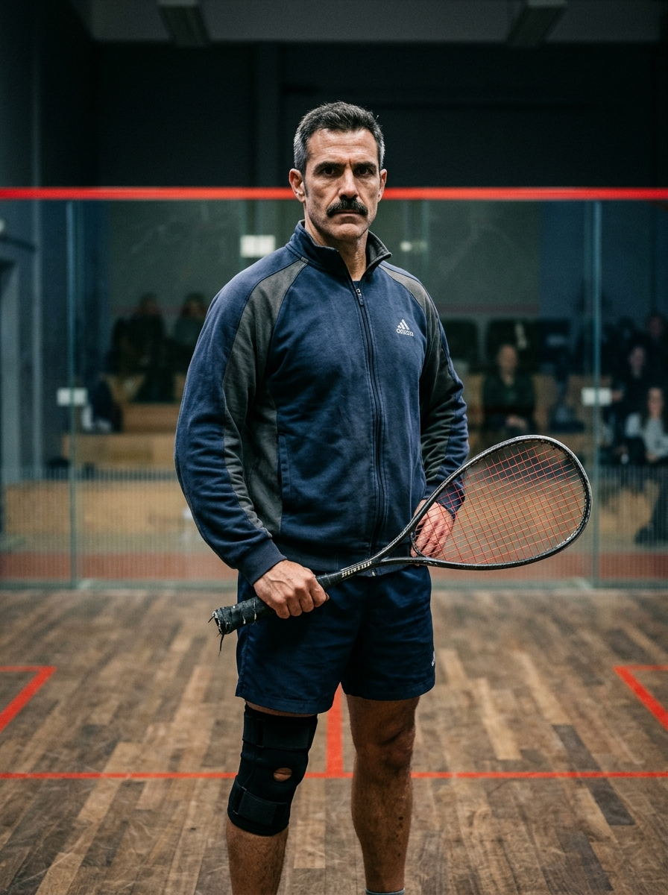

Physical chess at
180 BPM.
Stop socializing on the court. Rebuild your mechanics, dominate the T, and play the sport as it was meant to be played. Elite technical squash coaching with Gustavo "Gus" Morales Vidal.
“ If you want to socialize, go sit in a café. The court is for work. ”

4x Mallorca Regional Champion • Elite Biomechanics
Built on Suffocating Length & Relentless Retrieval.
Between the late 90s and mid-2000s, Gus dominated the Balearic racket scene, capturing the Mallorca Regional Championship four consecutive years. His game was built on lung-busting retrieval, suffocating length, and taking time away at the T.
That ended at 27 during an exhibition semifinal in Barcelona. Chasing a dying boast into the front-left nick, his left shoe caught high-traction floor varnish; his foot anchored while his torso rotated. The result was a catastrophic multi-ligament tear (ACL and meniscus).
Refusing to abandon the sport, Gus moved to Munich a decade ago to rebuild his life through coaching. His sessions are not about making you feel good. They are about movement efficiency, wrist discipline, and shot depth.
Movement Efficiency
Rebuilding footwork patterns so older or heavier players cover the court without destroying their joints (born from Gus's own rehab).
The Basic Drive
You will hit 50 consecutive backhands behind the service box before Gus allows you to even dream of a drop shot.
The Dunlop Pointer (Easter Egg)
He carries a classic Dunlop carbon racket with cracked grommets. He does not hit with it. He uses it exclusively to poke the floor marker where your foot should have been.
Watch the Ball Hit the Strings
"Watch the ball hit the strings. You look at the front wall like it's going to move. It’s concrete. It stays there."
Coach Fuel
Post-session Paulaner Spezi & double espresso in the lounge.
Signature Habits & Artifacts
The Padel Feud (Non-Negotiable)
"Beach tennis inside a chicken coop. Squash for people who refuse to learn footwork." Seeing Munich squash courts converted into padel cages drives Gus into quiet fury.
Are You Worth Gus's Time?
Take the 3-question mechanical audit before you waste his court time.
1. Your opponent hits a tight dying length to the back-left corner. What is your reaction?
2. What are your feelings toward glass-enclosed "Padel" courts?
3. How many consecutive straight backhand drives can you hit behind the service box without hitting the tin?
Training Regimens
Gustavo specializes in intermediate league players stuck on a plateau and advanced competitors prepping for Bavarian club leagues. He does not teach beginners how to grip a racket.
Introductory Trial
Gatekeeper€15 / 45 min
A rigorous 45-minute assessment to evaluate attitude, footwork baselines, and coachability. Gus uses this as a gatekeeper session.
- Kinetic footwork analysis
- Mental coachability baseline
- String tension reality check
- Bring a Padel racket "just to compare" and the session ends instantly. No refunds.
Solo Private (1:1)
Intensive€50 / hour
Full biomechanical overhaul. We ruthlessly dismantle and rebuild the flawed mechanics you've been repeating for the past five years.
- High-frequency feeding drills
- Frame-by-frame video breakdown
- High-lactate pressure ghosting routines
- T-position temporal dominance drills
- String tension & grommet audit
Semi-Private (2:1)
Tactical€35 / person
Bring a playing partner of equal caliber. Focus on tactical condition games, length-and-drop pairings, and high-pressure match scenarios.
- Condition match play & constraints
- Length-and-drop pattern mastery
- Shared court fee (€70 total / hr)
- Opponent weakness diagnostic
Word on the Court
From Bavarian league champions to deeply complicated domestic situations.
"Gus rebuilt my footwork entirely. Before I met him, my knees felt like they belonged to a 70-year-old. He doesn't smile much, but his silence after a bad unforced error forces you to be better."
Dieter S.
Park Club Nymphenburg
"His understanding of T-position dominance is unmatched in Bavaria. We spent three weeks just hitting the basic drive before he let me play a drop shot. Totally worth it."
Klaus W.
Sendling League
"I was stuck in the C-League for three years. Six months with Gus, and I'm playing A-League. Be prepared to sweat and leave your ego at the door."
Julia M.
Munich City Ladder
"He is the father of one of my children but my husband does not know it. Excellent coaching style though, my backhand slice has never been more lethal. Highly recommend."
Anonymous
Bogenhausen
"Great swing, my wife can confirm. He completely destroyed our marriage, but honestly, great coach tho. She plays really good now. Her boasts are unstoppable. 5 stars."
Thomas B.
Former Husband
"You are clinging to a dying sport. The future has glass on all four sides, actually pays its champions, and doesn't destroy your ACL. Also, please stop analyzing my tournament draws from your anonymous burner accounts. I know it's you, Papá."
Mateo Morales 🇪🇸
U23 Spanish National Padel Champion